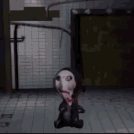

Welcome to the reverse bear CAPTCHA, something that has absolutely no similarity to the reverse bear trap from Saw except for the overly contrived name.
Let's play a game
Solve the equation below. If you manage it, you get to live. If you don't, well... that would be a shame. Better be quick.
(Click me to reveal a hint)